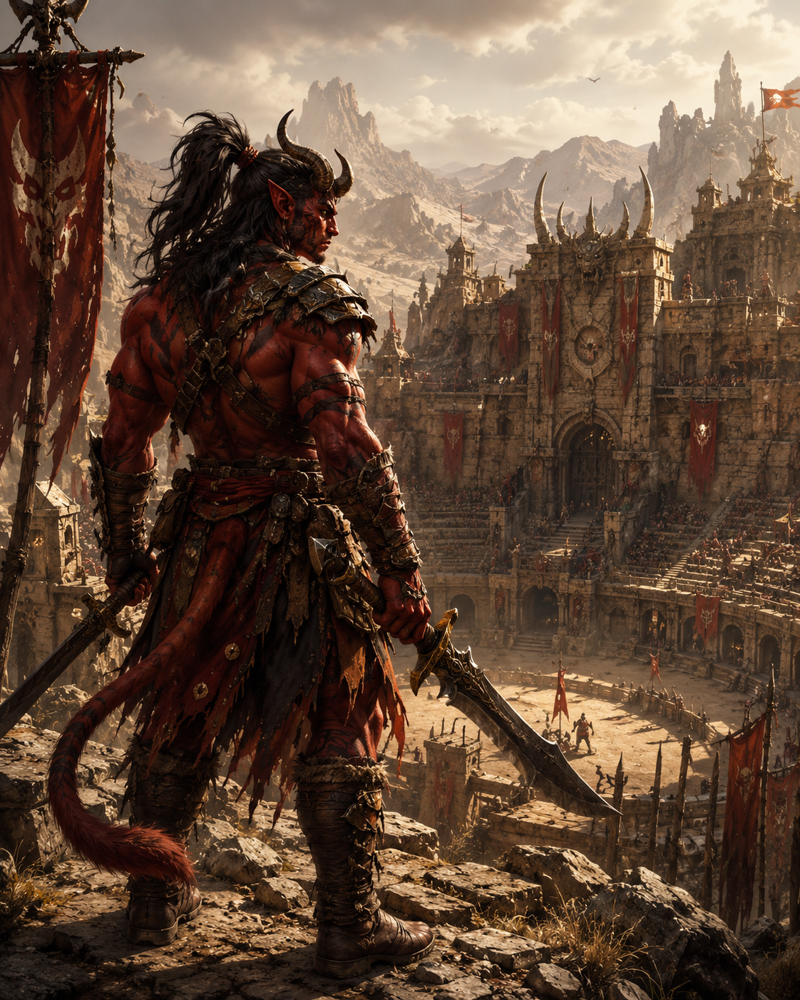
I
Anims
La loi de la meute, l'instinct et la force reconnue par le groupe.
RPG narratif mobile
Scellez les portails.
Portez le poids du monde.
Explorez une terre fracturée, choisissez vos alliances et affrontez ce qui cherche à franchir les seuils.
Le monde
Aghasme est un monde né d'une chute. Quatre orbes célestes ont marqué la terre et transformé ceux qui les ont trouvées. Des lignées sont nées de ce choc, chacune portant un don, une dette et une fracture.
Puis vinrent les portails, déchirures vers l'Autre Monde. Les anciens sacrifices ont fermé les seuils sans jamais guérir la blessure. Aujourd'hui, le sang ancien se réveille et survivre ne suffit plus : il faut comprendre ce qui tient encore le monde debout.
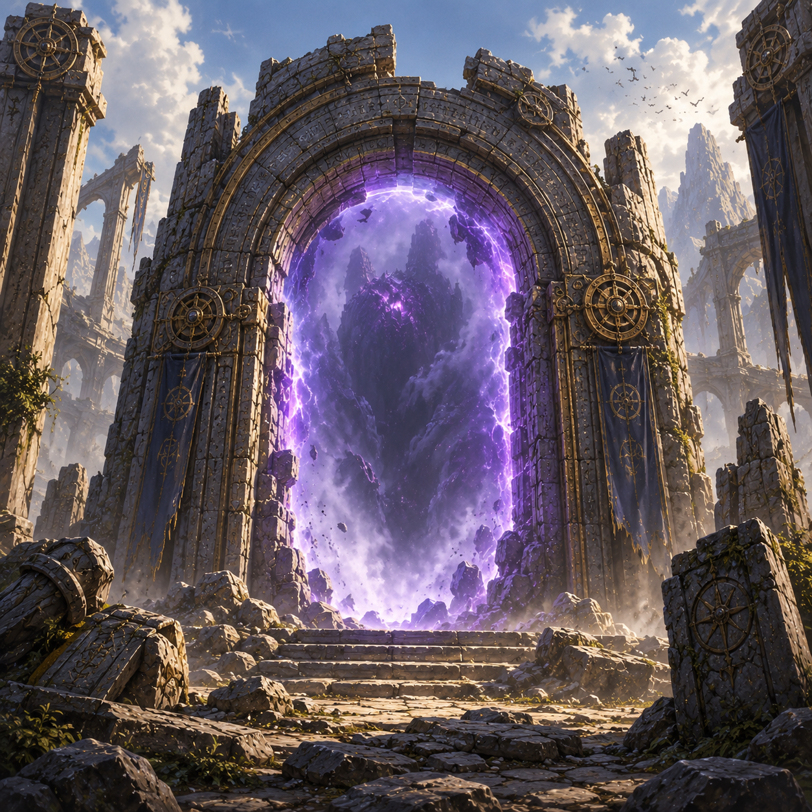
La menace
Les portails ne sont pas de simples passages. Ils déforment les lieux, réveillent les mémoires et attirent les forces qui veulent rouvrir ce qui fut scellé.
Quatre héritages
Quatre peuples, quatre manières de lire le monde et d'affronter les portails.

I
La loi de la meute, l'instinct et la force reconnue par le groupe.
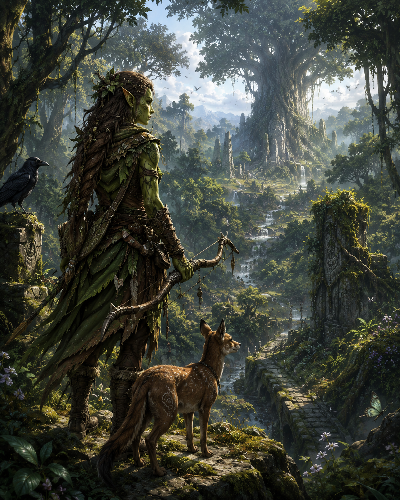
II
Des pactes de racines, d'offrandes et de mémoire avec la forêt vivante.
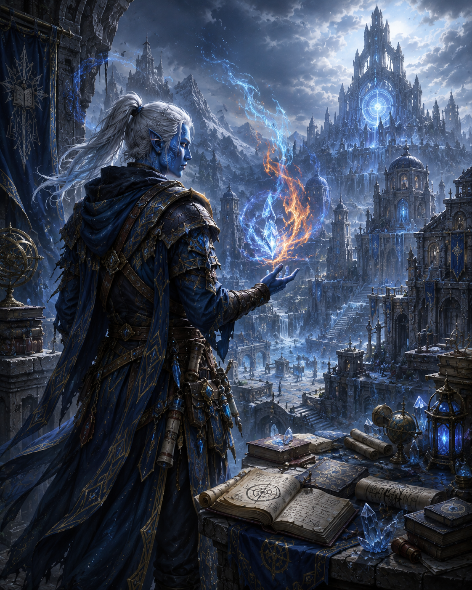
III
La tension du feu, du givre et de la cendre tournée contre l'instable.
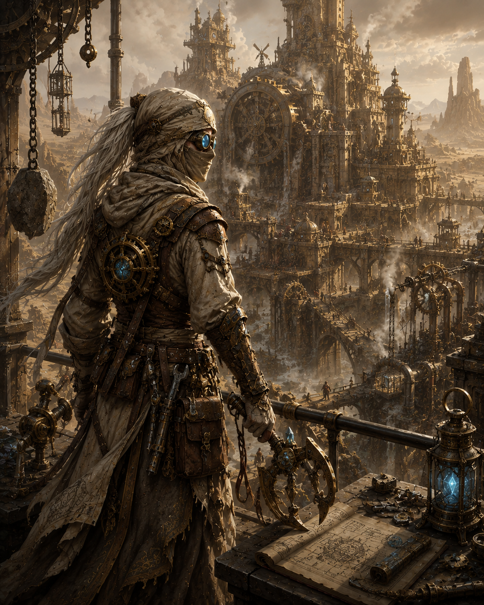
IV
Les protocoles, les machines et les savoirs interdits pour contenir le chaos.
Votre héros
Chaque clan porte une autre manière de traverser Aghasme, de lire ses dangers et de répondre à ce qui s'éveille.
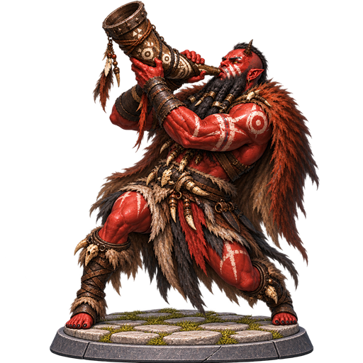
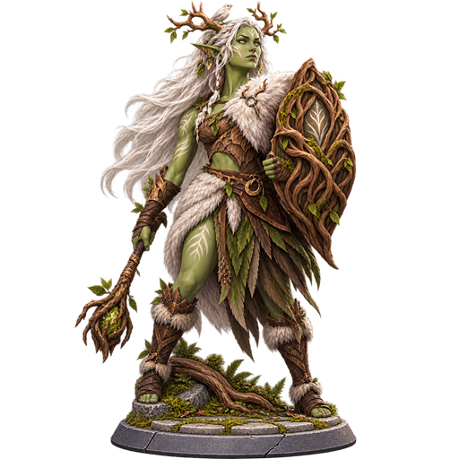
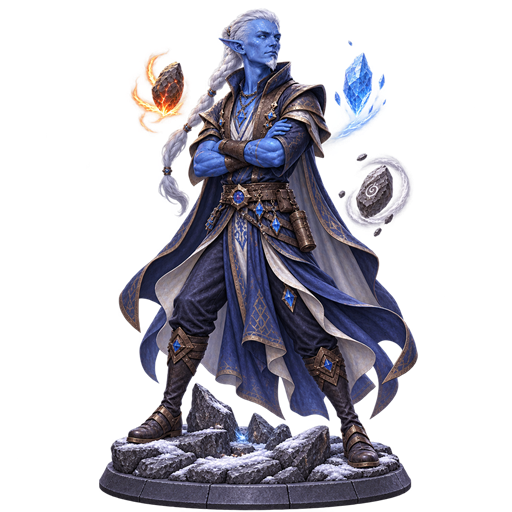
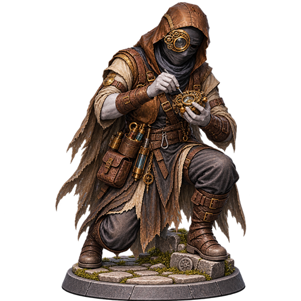
Votre aventure
Chaque système participe au récit : une compétence révèle un passage, une décision change une route, un combat pèse sur la suite du voyage.
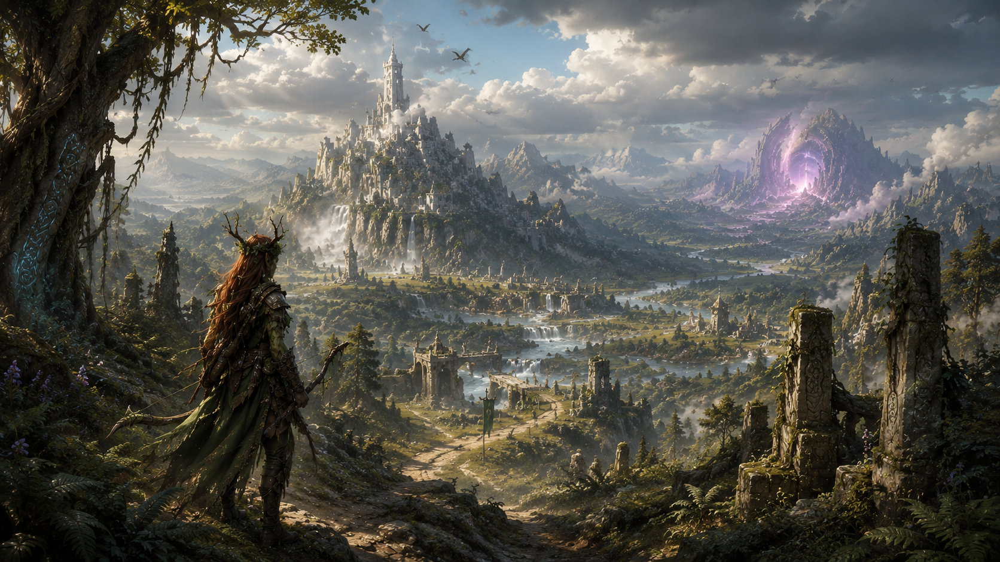
01
Explorer
Fouille, perception, survie, discrétion, artisanat ou alchimie deviennent des outils aussi décisifs qu'une arme. Un passage oublié ou une trace discrète peut révéler un lieu, une ressource ou une vérité.
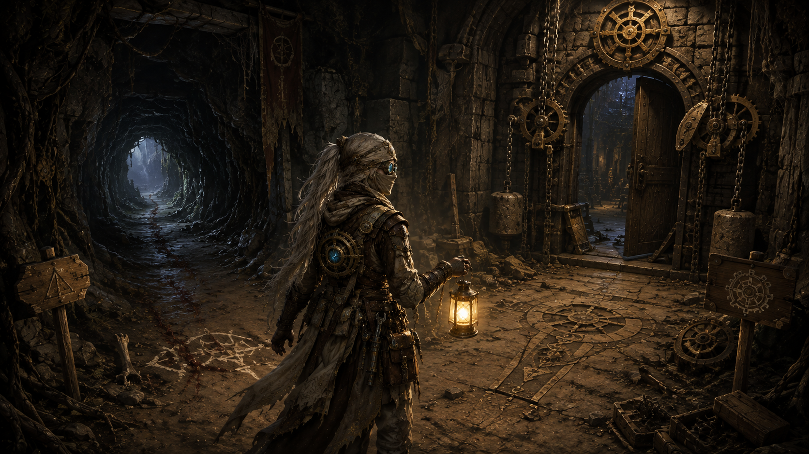
02
Choisir
Les narratives mêlent choix, tests de compétences et conséquences. Les décisions ouvrent des chemins, révèlent des vérités partielles et redessinent les alliances comme les dangers.
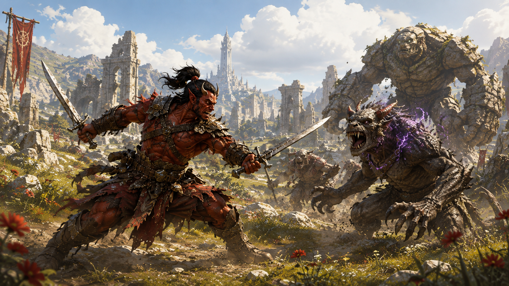
03
Combattre
Sur une grille au tour par tour, positionnement, portée, statuts et tempo comptent. Les donjons ajoutent paliers, modificateurs et boss à des runs où chaque ressource engagée rapproche du scellement d'un portail.
Bestiaire
Les seuils laissent passer des créatures anciennes, corrompues ou façonnées par des forces que le monde ne comprend plus.
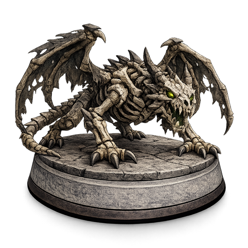
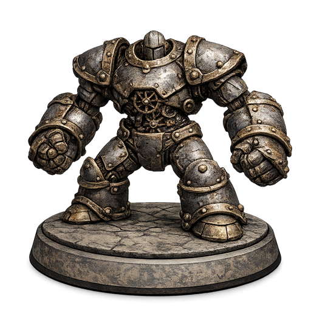
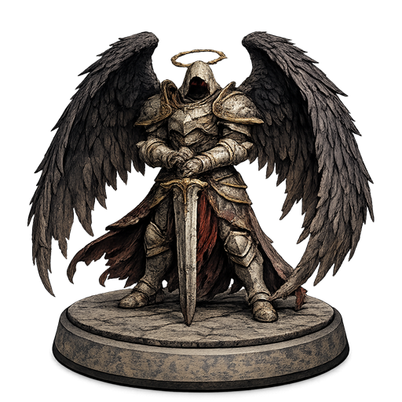
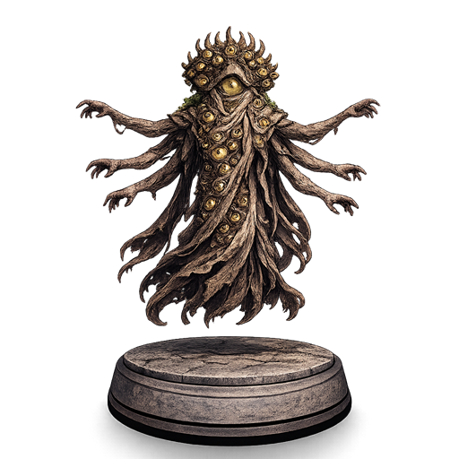
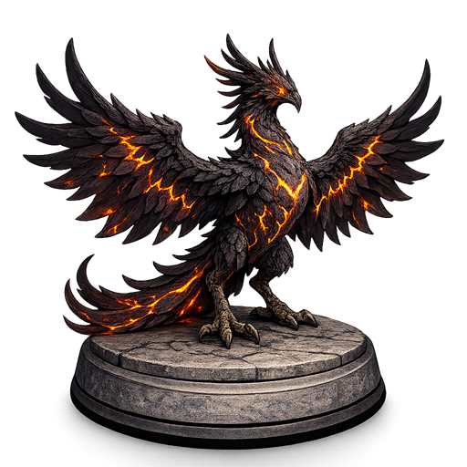
Le voyage commence
Aghasme est un RPG dark fantasy narratif conçu pour mobile, où le monde se dévoile par fragments et se souvient de vos décisions.